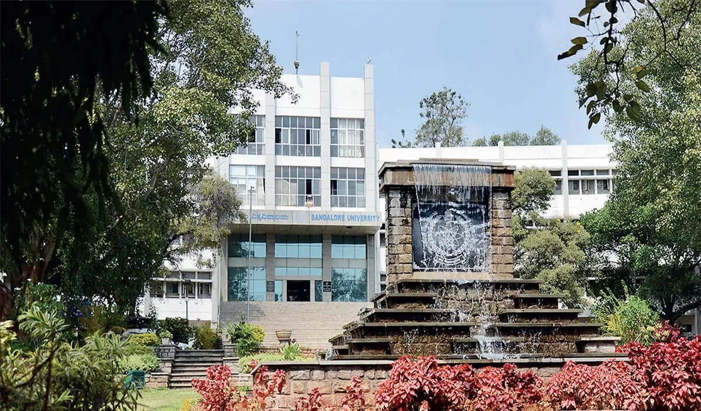
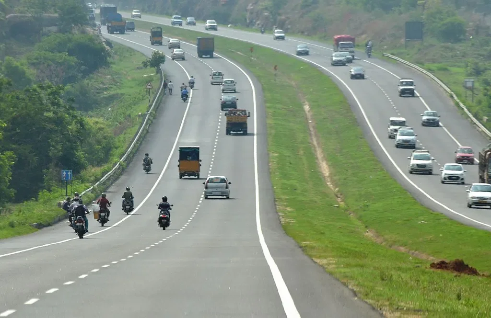
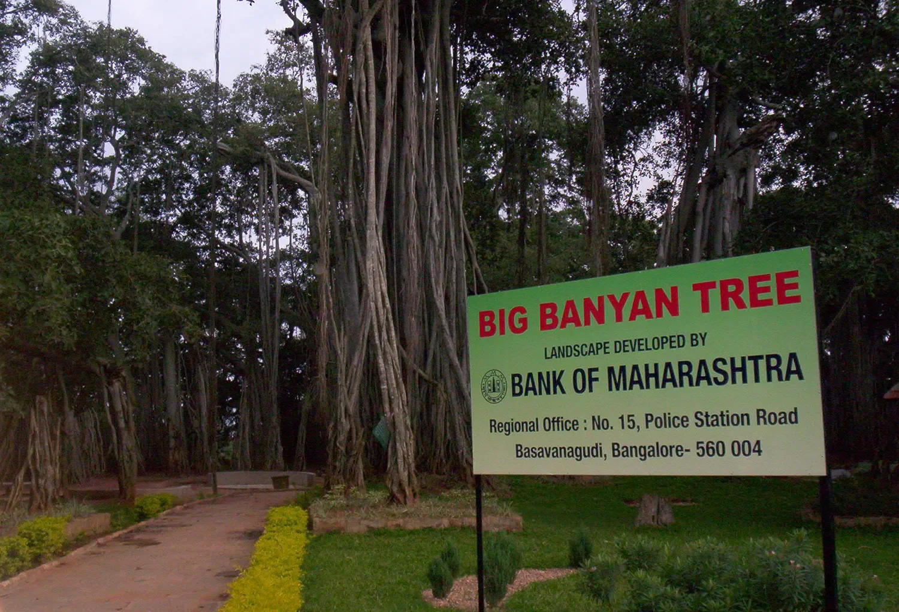
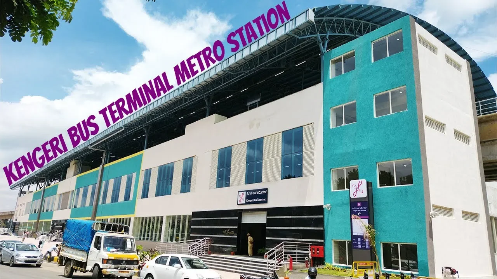
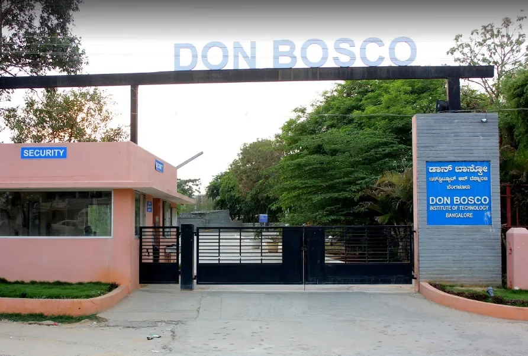
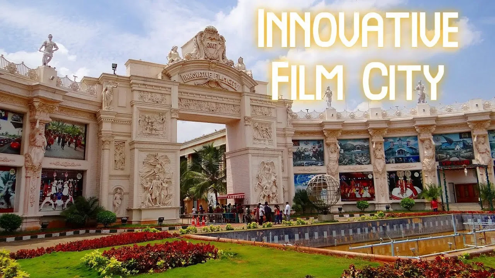

Mysore Road today is becoming one of the most sought after locations. It offers the discerning home-seeker the best of both worlds with a salubrious location on one side and all the trappings needed for a serene and comfortable lifestyle on the other. In this blog we capture some of the salient features of this once quiet location, but today a vibrant, thriving and much sought-after region.
Once upon a time, Mysore Road was known as just that – the road through which you would reach the city of Mysore while travelling from Bangalore.
Mysore Road which actually begins in the city somewhere near the LIC Main Office at Corporation Circle, snakes through what can roughly be called the South-West divide of the City. It veers through localities like RR. Nagar, Nayandahalli, Dodpete, Kenchenahalli, Banashankari, Guddadahalli, Bangalore University, Avalahalli and Kengeri.
While not completely off the beaten track, as it did have the satellite town of Kengeri bracing it, Chamrajpet on one side, and Rajajinagar on the other side, Mysore Road was still considered a bit far out. People used to venture out mainly to a natural attraction called “The Big Banyan Tree” and after that while travelling to Mysore excitedly point out the hillocks where the film Sholay was shot at Ramnagaram. The other sight was the river Vrishabhavathi that follows the road along some parts. And that was about it.
Fast forward a few decades and today, all that has changed. Mysore Road is now one of the hottest locations in Bangalore. Till now, the city’s Northern, Eastern and South Eastern Suburbs have been in the spotlight for development of IT work hubs, entertainment, real estate and lifestyle options. But with Mysore Road coming into its own over the last few years, one can safely say that it is definitely amongst the top suburbs that people are gravitating towards.
There is a great traction among property and apartment buyers towards Mysore Road. With many projects from budget to premium coming up on Mysore Road, the eyes of investors as well as home buyers are now heading southwards. Property developers say that the key infrastructure projects on Mysuru road will propel the realty growth. Read more: https://bit.ly/Mysore_road

And what are the main reasons for this? When and how did Mysore Road get up the list of choices for people? To understand this better we have to step back a decade or so when the region was still under development.
Other than Jayanagar, South Bangalore never had a proper work hub and connectivity was sparse. The road networks were also in pathetic shape and suburban zones along the peripheral regions were clumpy in terms of development. It’s not just one, but a clutch of factors that have fed the development of Mysore Road. One of the major early contributors was the development of the NICE Road. Prior to that, reaching Mysore Road was a cumbersome chore where one had to cross several high density traffic points to reach it. However with the completion of the NICE road, people from Bannerghata Road, Electronics City and Kanakapura Road could now easily reach Mysore Road. Development of Electronics City, Bannerghata Road and JP Nagar into IT and lifestyle hubs have also played a key role. With growth in these regions shooting skyward and residential options slowly getting cramped and expensive, Mysore Road was now just half an hour’s drive or less away. By Bangalore standards that is an easy task in terms of reaching one’s home.
Enter the Bangalore-Mysore Expressway which is well in progress and will be accessible within the next year or so. This multi-lane road will provide a major transit route that will help speedy access to not only Mysore, but also Coorg and Kerala and Southern Tamil Nadu. Travellers going to places within these states and regions will be able to use this high speed corridor to cut down their travel times by more than an hour or so.
Speaking to Star of Mysore yesterday, a top NHAI Officer said that the travel time between the two cities will be reduced to 90 minutes from the present three hours and people of the region would see how a world-class highway looks like. Read more: https://bit.ly/Mysore_Road_Development

The Expressway consists of 2 phases: a 58 km Phase 1 between Bengaluru – Nidaghatta and 61 km Phase 2 between Nidaghatta – Mysore. It will have a total of 19 large bridges, 44 small bridges and 4 railway overbridges (ROBs) and 50 underpasses for vehicles and pedestrians. Greenfield sections will form bypasses around Bidadi, Ramanagara-Channapatna, Maddur, Mandya and Srirangapatna. Toll booths will be built at Kumbalgodu and Srirangapatna.
The advantage of Mysore Road home is that one can travel to any place in Bengaluru quite quickly due to NICE Road, Metro and train. On the other hand, the new 10-lane road to Mysuru will help people move to other nearby cities in a hassle-free manner. Read more: https://bit.ly/Mysore_road

The third transport factor in favour of Mysore Road is the development of the Metro. The purple line that connects Kengeri in the South to Byanpannahalli in the East forms a very important connector for Mysore Road with major city zones. For those working in the centre of Eastern parts of the city, travelling to Mysore Road is zippy and comfortable. What used to take more than an hour and a half is now reduced to less than half an hour of travel time and in a comfortable (no pothole) AC environment. With other lines of the Metro slowly coming online, Mysore Road will now be connected to other parts of the city and even the airport when the connecting line is complete.
Currently, the big plus point for buyers are the extension of the Metro network on Mysore Road and added new stations like Nayandahalli, RR Nagar, Jnana Bharati, Pattangere, Kengeri Bus Terminus and Kengeri. The BMRCL will also be adding a seventh station where the Challaghatta Metro depot is located. The new station located across NICE Road will help people to commute to other parts of the city as well. Read more: https://bit.ly/Mysore_road

When people choose a living space and region, a major factor that plays a key role in the choice of location is the proximity to schools and educational institutions. Mysore Road comes up trumps as it is again located close to a host of top schools, colleges and universities. Delhi Public School, BGS Public School, Tattva School, Christ School, Valley School and Jain International School (on Kanakapura Road) are some of the prominent schools around. While Christ University, Don Bosco Institute of Technology, Rajarajeshwari Institute of Technology and Nursing, ACS College of Engineering and many others are located in and around the region.
Commercial and lifestyle hubs have slowly developed along Mysore Road with Rajarajeshwari Nagar, Uttarhalli, Kengeri and other surrounding regions offering everything from multiplexes to restaurants that cater to all types of hospitality, entertainment and shopping needs of the entire family. Gopalan Mall, Wonderla and many other upcoming lifestyle zones will ensure that one does not have to venture far out for wholesome entertainment for the whole family.

However, what’s most important is the access to quality living. With other proximity zones getting filled up and larger parcels of land becoming scarce, Mysore Road is the one place that offers real estate developers the opportunity to access large parcels of land and craft residential options that deliver a better quality of living. After all, those are the main pre-requisites one looks for when investing the savings of a lifetime.
Mysore Road today offers a great opportunity for those looking to settle down in a place that is bereft of the crowding that Bangalore is often known for. It offers a serene, salubrious, yet connected lifestyle, one that harkens back to days of old, yet with all the trappings that one needs for modern day living.



Leave A Comment